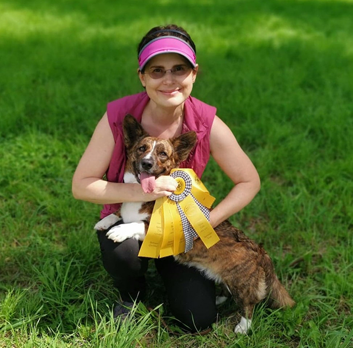

Home
About
Puppies

Zhelan Cardigans is a Vancouver-based kennel run by Anna Filippova - CKC and CCCC ethical breeder.
https://www.ckc.ca/Choosing-a-Dog/PuppyList/Breed.aspx?breedname=Cardigan%20Welsh%20Corgi&breedcode=WCC
https://cardigancorgi.ca/breeders/